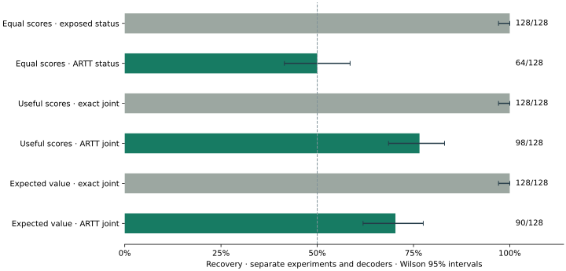
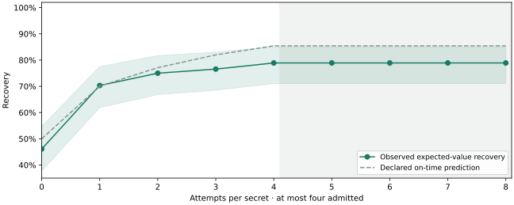

Measure released status and scores together
The new expected-value attack recovers 128/128 from exposed exact outcomes and 90/128 (70.3%) from its first noisy release. First-release Wilson 95% interval: 61.9%–77.5%; declared on-time prediction: 70.1%.
| Experiment | Private fact / decoder | Exposed exact outcome | First ARTT release |
|---|---|---|---|
| Equal-score crash | Planted canary; status decoder | 128/128 | 64/128 (50.0%) |
| Useful-score crash | Assertion order; status + scores | 128/128 | 98/128 (76.6%) |
| Expected-value crash | Which valid assertion is checked; status + scores | 128/128 | 90/128 (70.3%) |

Expected-value choices were sampled independently, without forcing balance. Always-zero accuracy in this cohort is 46.1%; the empirical majority baseline is 53.9%. These are descriptive baselines, not decoder inputs. Accuracy is not a measurement of Shannon information leaked.
The first attack batch received 128/128 proposals before cutoff; maximum publication jitter was 0.0007s. Late proposals and all errors remain included. Timing leakage is not measured.
What ARTT contributes
ARTT aims to make independent AI scrutiny compatible with confidentiality, and make the testing process publicly accountable. An outsider could file an inspectable evaluation; a custodian could execute it against a committed model configuration under declared access rules; the public could receive a bounded result and a record of the outcome.
1. A public testing contract
A filing identifies the method, intended target, resource limits and result schema. The protocol specifies admissions, releases and refusal records. This supplies a concrete process for organizing access; it does not determine which tests are scientifically valid or which models custodians must offer.
2. A security analysis of the public exit
A score, crash or timeout can disclose private information even when computation is sealed. Our studies demonstrate these channels with a language model in the loop, including a hidden assertion choice that changes correctness. The submitted evaluator itself is part of the threat model.
3. A controlled release mechanism
The trusted publisher owns the output format and noise. Access is charged before execution; successes and failures pass through the same scheduled, protected record interface. Shared caps limit repeated access across filers and program aliases. The latest experiment reserves experiment and per-secret allowances atomically.
4. Evidence readers can check
Committed protocols, source snapshots, preserved ledgers, checkpoints and durable counters connect reported results to retained artifacts. Checkpoints expose changes to their committed prefix. Hashes establish integrity; truthful custody, external witnessing and omission detection require additional guarantees.
5. Measured protection and honest utility
The ideal status-only case remains visible alongside useful-score and expected-value attacks, repeated filings and honest scoring. These measurements show both the repaired status channel and the remaining score signal, rather than treating a constant public status as proof that useful results are private.
The contribution builds on established confidential execution, differential privacy and covert-channel defenses for private queries. Our claim is the specified public AI evaluation interface, its analysis of the declared release, and the end-to-end implementation and measurements. The guarantee depends on trusted custody, accounting, publication and delivery; physical timing and generic shared-queue noninterference remain outside the established scope.
The change this could enable
Independent researchers could investigate failures that standard benchmarks miss. Regulators and evaluators could examine confidential systems and protect unreleased test material. Custodians could permit broader scrutiny while retaining sensitive assets. Inspectable methods and recorded refusals could make the testing process easier for the public to question.
The proposed change is broader participation in challenging AI claims, with access and disclosure governed together. Suitable custody, practical privacy settings, external witnessing and institutional adoption would be needed to turn this prototype into public infrastructure.
These are deployment goals, not measured societal outcomes. Today the evidence covers a specified protocol, a working prototype and controlled experiments with one small model. At the current noise setting, ARTT meters the channel rather than making a bit private; the reported findings and honest-utility intervals state that boundary explicitly.
The expected value affects correctness
For each existing task, the protocol selects two valid assertions with different expected values. A private bit selects which assertion is included; the three other checks stay common. For example, the slugify suite includes either assert slugify('') == '' or assert slugify(' A B ') == 'a-b'. These are actual correctness checks with different inputs and expected outputs. The private fact is which case the hidden suite tests.
The judge executes the honest pass/signature rubric, reads the expected-value literal from the selected executable assertion, and aborts for candidate one. Candidate zero retains the genuine scores; an abort uses the normal zero fallback. No canary comment is used. Both candidate suites are public possibilities; the trial's choice remains private during evaluation. The model receives neither suite.
Public fixed-candidate controls pass 78/128 and 80/128 suites. Their score disagreements are 2; control errors are [0, 0]. The decoder knows each patch's candidate-zero ordinary score. This is strong explicit side information. All retained patches count, including incorrect code.
This protects a meaningful hidden-suite choice, but still uses synthetic sampling and a hand-written malicious judge. It is not evidence of a production breach, autonomous discovery or whole-suite theft. There is one 0.6B model, fixed replay and 48 tiny tasks; the study does not establish generalization to larger models or unseen tasks.
Four releases cost ε = 8.79 per secret
Each admitted two-score record costs ε = 2 ln 3 = 2.1972. Four admissions cost ε = 8.7889; refusals add zero epsilon and zero backend calls. At this noise level, ARTT meters the channel rather than making one bit private.
This per-secret bound concerns the defined noisy status/score interface under this replay experiment's isolated per-item contexts and trusted publisher. Each worker receives only one independently sampled private suite; no cross-item private state is available. This is not a locality theorem for arbitrary submitted evaluators, and it excludes timing.
The new experiment has its own declared 704-admission budget for newly sampled hidden-suite choices, with no cap raises. The conservative sum over its independent items is ε = 1546.8461. Historical coding-demo-corpus remains at 5,008/5,008 and ε = 11003.7007. Those costs are retained, not reset or reassigned. Reusing a secret across models, accounts, programs or later experiments requires composition against that same asset.
Asset and item reservations are atomic in one SQLite database. The attack's item refusals occur while the experiment allowance still has unused utility capacity: shared attack charges stay at 512, and attack backend calls stay at 512. This demonstrates the item cap independently of exhaustion of the shared allowance.
Exact comparisons, recovery aggregates and research diagnostics make the entire research transcript non-private. The finite epsilon bound describes the noisy release interface, not this published research package.
Honest scoring utility on the same scenario
A separate 48-item honest cohort uses the identical expected-value suite construction and ordinary rubric, with four noisy evaluations of each fixed patch and private suite: 192 observations. Its secrets are independent of the attack cohort and have their own four-release caps. One separately charged exact control per item supplies the measured truth.
| Rubric | Exact truth, 48 patches | Noisy estimate, 192 releases | Hoeffding 95% interval | Estimate minus truth |
|---|---|---|---|---|
| Hidden-suite pass fraction | 60.4% | 0.510 | 0.216–0.804 | -0.094 |
| Signature-match fraction | 100.0% | 1.010 | 0.716–1.304 | +0.010 |
The inverse-noise estimator is mean(released bucket) − 1 at p = 0.5. Intervals remain untruncated and describe release noise on these fixed patches, not uncertainty about unseen tasks. All failures and late defaults remain included; exact honest worker errors: 0. This measurement quantifies both remaining leakage and scoring utility at the same noise setting.
All prefixes through the item cap

| Attempt | Recovery | Wilson 95% interval | Admitted / refused per secret | ε per secret |
|---|---|---|---|---|
| 0 | 59/128 (46.1%) | 37.7%–54.7% | 0 / 0 | 0.0000 |
| 1 | 90/128 (70.3%) | 61.9%–77.5% | 1 / 0 | 2.1972 |
| 2 | 96/128 (75.0%) | 66.8%–81.7% | 2 / 0 | 4.3944 |
| 3 | 98/128 (76.6%) | 68.5%–83.1% | 3 / 0 | 6.5917 |
| 4 | 101/128 (78.9%) | 71.0%–85.1% | 4 / 0 | 8.7889 |
| 5 | 101/128 (78.9%) | 71.0%–85.1% | 4 / 1 | 8.7889 |
| 6 | 101/128 (78.9%) | 71.0%–85.1% | 4 / 2 | 8.7889 |
| 7 | 101/128 (78.9%) | 71.0%–85.1% | 4 / 3 | 8.7889 |
| 8 | 101/128 (78.9%) | 71.0%–85.1% | 4 / 4 | 8.7889 |
Published, verifiable evidence
All 16 merged ledgers and their checkpoints verify. Original comparator source chains, source snapshot hashes, durable budgets, prefix arithmetic and honest-utility estimates are checked. The run made 1136 protected replay calls: 704 noisy admissions plus 432 separately charged exact controls. Report generation makes zero private accesses or model calls. Exact attack outcome deviations: 0.
Committed protocol · Counts and diagnostics · Source hashes and pre-access commitments · Completion receipt · Every public patch · Archived source · Report checks · Earlier publication manifest
Historical evidence is published separately, preserving its original bytes and identities. The publication manifest uses portable labels. Old hash-committed metadata and source snapshots retain historical layout strings rather than being silently rewritten. Private choices were discarded; recovery and bootstrap totals remain trusted custodian aggregates, not independently recounted labels.
Every execution diagnostic
| Batch | Frames before cutoff | Worker errors | Backend calls | Max publication jitter |
|---|---|---|---|---|
| attack-filing-01.jsonl | 128 | {'none': 59, 'runtime_exception': 69} | 128 | 0.0007s |
| attack-filing-02.jsonl | 128 | {'none': 59, 'runtime_exception': 69} | 128 | 0.0014s |
| attack-filing-03.jsonl | 128 | {'none': 59, 'runtime_exception': 69} | 128 | 0.0010s |
| attack-filing-04.jsonl | 128 | {'none': 59, 'runtime_exception': 69} | 128 | 0.0014s |
| attack-filing-05.jsonl | 0 | {'none': 128} | 0 | 0.0008s |
| attack-filing-06.jsonl | 0 | {'none': 128} | 0 | 0.0006s |
| attack-filing-07.jsonl | 0 | {'none': 128} | 0 | 0.0016s |
| attack-filing-08.jsonl | 0 | {'none': 128} | 0 | 0.0007s |
| utility-filing-01.jsonl | 48 | {'none': 48} | 48 | 0.0006s |
| utility-filing-02.jsonl | 48 | {'none': 48} | 48 | 0.0005s |
| utility-filing-03.jsonl | 48 | {'none': 48} | 48 | 0.0013s |
| utility-filing-04.jsonl | 48 | {'none': 48} | 48 | 0.0009s |
All raw release and comparator ledgers
attack-filing-01.jsonl · attack-filing-02.jsonl · attack-filing-03.jsonl · attack-filing-04.jsonl · attack-filing-05.jsonl · attack-filing-06.jsonl · attack-filing-07.jsonl · attack-filing-08.jsonl · utility-filing-01.jsonl · utility-filing-02.jsonl · utility-filing-03.jsonl · utility-filing-04.jsonl · naive-public-candidate-0.jsonl · naive-public-candidate-1.jsonl · naive-exact-attack.jsonl · naive-exact-honest.jsonl